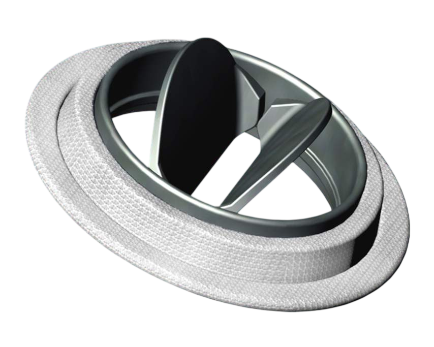
Механические протезы
— требуют пожизненной антикоагулянтной терапии (кровотечения — 1–2% в год), риск тромбоза (0,5–1% в год) и эндокардита (1–3% в год), гемолиз, постоянный шум. Не растут — критично для детей.
Сердечно-сосудистые заболевания — ведущая причина смертности в мире: 18 млн человек ежегодно (ВОЗ). Значительную долю пациентов составляют люди с врождёнными и приобретёнными пороками сердца, причём большую часть занимают дефекты клапанного аппарата. В России ежегодно выполняется ~10 000–12 000 операций протезирования клапанов, в мире — > 400 000.

— требуют пожизненной антикоагулянтной терапии (кровотечения — 1–2% в год), риск тромбоза (0,5–1% в год) и эндокардита (1–3% в год), гемолиз, постоянный шум. Не растут — критично для детей.
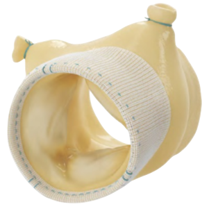
— срок службы 10–15 лет, кальцификация и структурная дегенерация (10–15% в первые 10 лет). У пациентов младше 40 лет риск реоперации достигает 25–73%, у детей — повторные операции каждые 10–12 лет. Не растут.
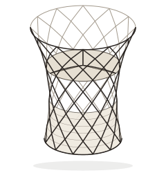
— применяются у пациентов > 65 лет, срок работы 10–15 лет, стоимость ~950 000 руб. Не растут — не подходят для детей.
Главная дилемма для детей:
либо повторные операции каждые 10–12 лет,
либо пожизненные антикоагулянты.
Фиксированный размер имплантата не соответствует растущему сердцу.
Цель — создание биосовместимого и биодеградируемого полимерного материала на основе поликапролактона с улучшенными адгезивными свойствами для клеток.
Поликапролактон гидрофобен — клетки плохо прикрепляются. Мы впервые применили L-лизин как инициатор полимеризации (а не просто модификатор) для скаффолда сердечного клапана. Это позволяет отказаться от токсичных металлоорганических катализаторов: лизин встраивается в полимерную цепь на этапе синтеза. Результат — адгезия клеток выше на 40–50% без потери прочности (~18 МПа).
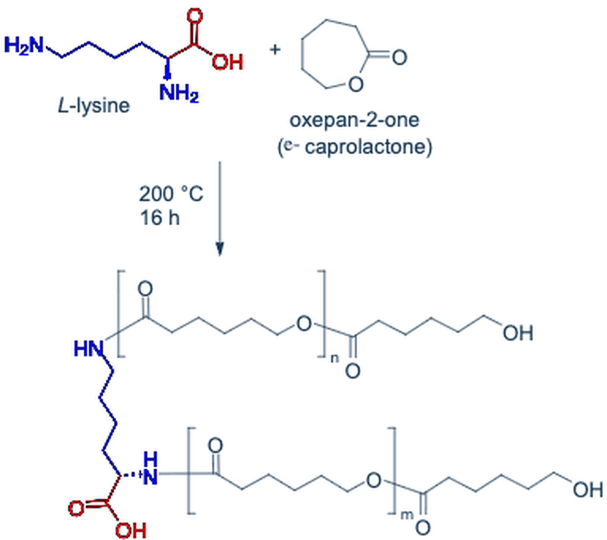
На матрикс высеваются аутологичные клетки пациента — они прикрепляются, размножаются и формируют живую ткань. Полимерный каркас безопасно растворяется, замещаясь собственными тканями пациента.
Синтез сополимера полимеризацией с раскрытием цикла ε-капролактона при 200 °C в аргоне, где L-лизин — нуклеофильный инициатор.
Структура подтверждена методами ИК- и ЯМР-спектроскопии.
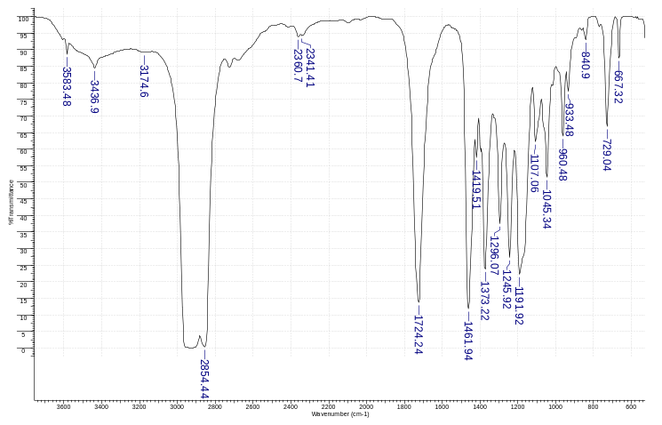
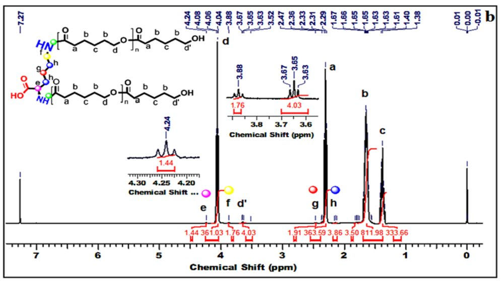
In vitro — отсутствие цитотоксичности.
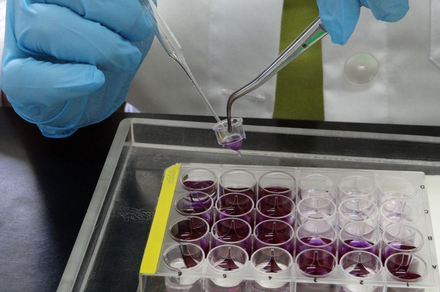
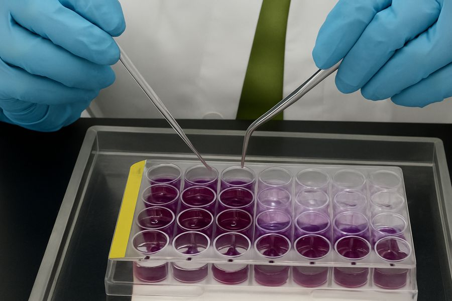
Сейчас — доклинические исследования in vivo.
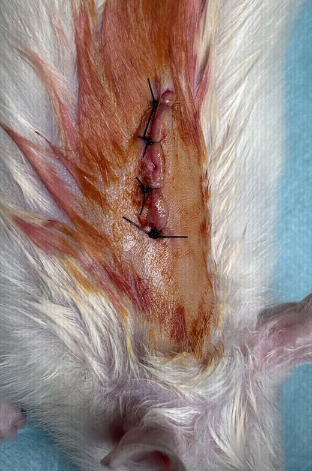
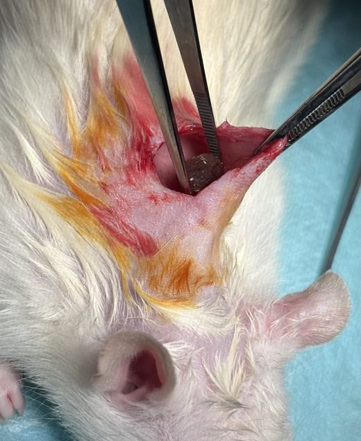
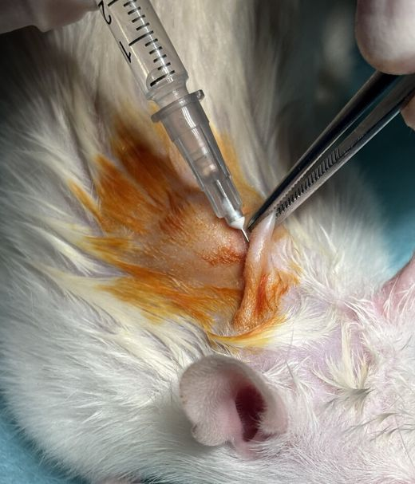
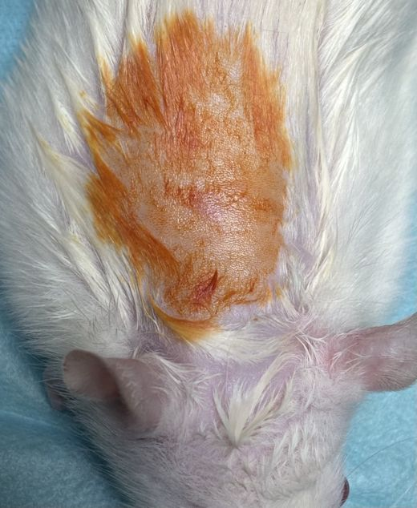
Далее — оценка гемосовместимости и создание опытного образца клапана методом 3D-печати.
Себестоимость отечественного биодеградируемого скаффолда составит 40 000 – 50 000 рублей, что в 4–5 раз дешевле импортных биологических протезов (от 200 000 рублей). Материал исключает необходимость пожизненного приёма антикоагулянтов с контролем МНО (экономия ~50 000 рублей в год) и повторных операций (каждая стоит 200 000 – 500 000 рублей). Совокупный экономический эффект на одном пациенте достигает 500 000 рублей за счёт исключения реопераций и лекарственной терапии. Снижение затрат системы здравоохранения — до 75%, имплант окупается через 5–10 лет. Проект обеспечивает реальное импортозамещение и снижает зависимость от зарубежных производителей.
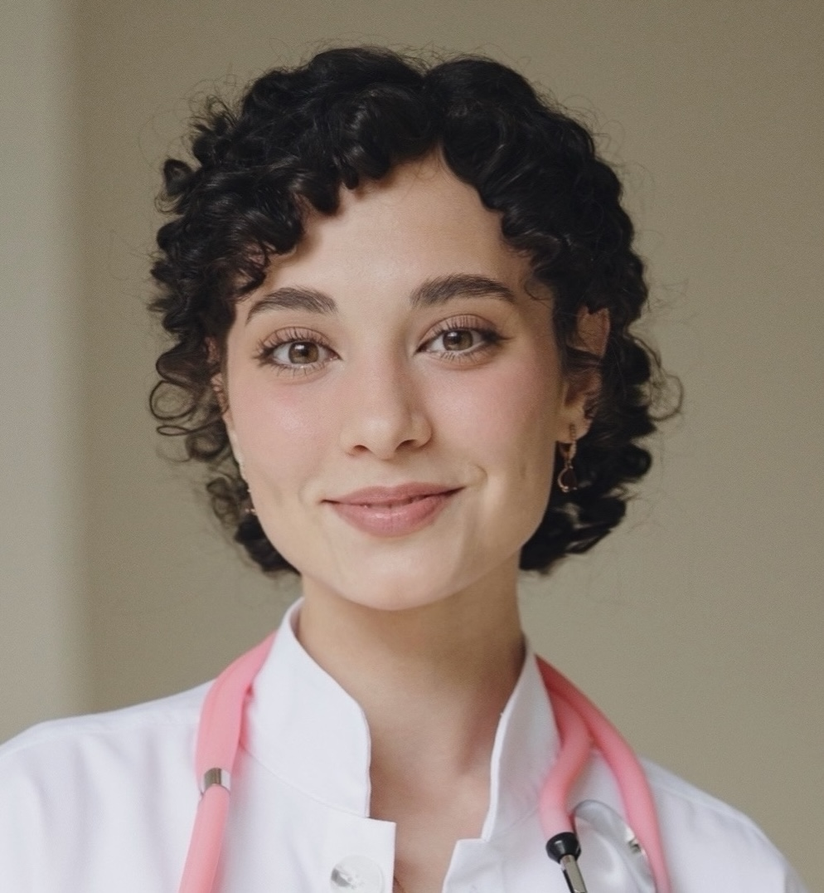
Дружинина В.Е.Клинический ординатор 1 года, «Детская хирургия», КубГМУ · автор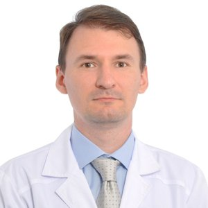
Попов К.А.Д.м.н., заведующий Научно-технологическим центром биомедицины КубГМУ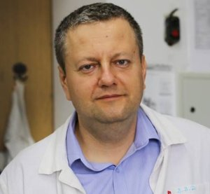
Доценко В.В.Профессор, д.х.н., заведующий кафедрой органической химии и технологий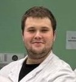
Цехомский А.В.Студент 6 курса лечебного факультета КубГМУ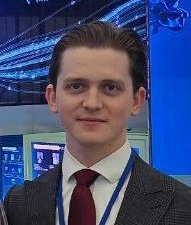
Федоренко А.Д.Клинический ординатор 2 года, «Нейрохирургия», КубГМУ